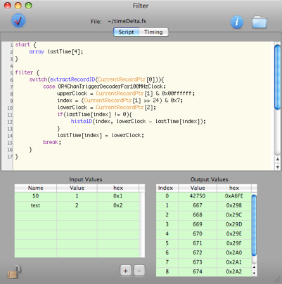
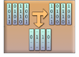
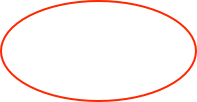
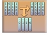
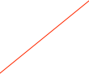
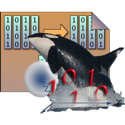
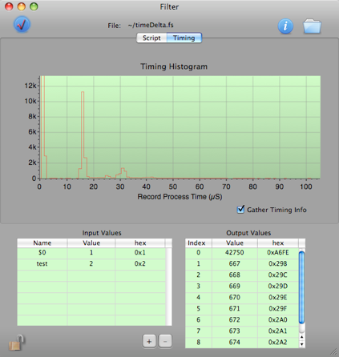
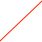

Data Filter Scripting



Overview

The ORCA FilterScript is a small interpreted programming language that can be used to do simple data stream filtering and/or event building. Among its design goals were that it could be interpreted using a relatively simple lex/yacc based code, provide a C-like language that would be easy to learn, and would be able to process data records as quickly as possible. FilterScripts are created and edited using the Data Filter object. Scripts can not be run manually, they are run automatically for each record that is passed thru the object. Check Syntax. Results posted to the status log.
Editing area
The values of these arguments can be accessed script
Open the Quick Guide
File where script is saved
Helpful Hint.
You can copy/paste text from the quick guide.
Script output values set via the display command
Language Reference
Introduction
With some limitations, ORCAScript is essentially a sub-set of the 'C' language. A couple of new keywords are introduced to facilitate interaction with the Data Filter run-time methods.
For a quick introduction, here the simplest possible filter which just passes the unaltered data:
//the optional start section is executed ONCE at the start of run
start
{
}
//the filter section is executed for each data record
filter
{
shipRecord(CurrentRecordPtr); //This filter really does nothing--just it outputs whatever it gets
}
//the optional finish section is executed ONCE at the end of run
finish
{
}
Note that there are three sections to a filter script:
-
• start { }
-
• filter { }
-
• finish { }
Start Section. The start section is executed once and only once at the start of a run. You can initialize variables and arrays there as needed. The section is optional.
Filter Section. All scripts must have a filter section. It is in this section where you put the code to implement the actual filter function.
End Section. An optional section where you can free arrays. It is run once at the end of a run. Note that you can not ship event records at this stage as the run is ended and all files has been closed.
Variables
Variables in FilterScript are easy-- just use them. All variables are longs or pointers to arrays and initialized to zero by default.
Arrays
Arrays must be defined using the keyword array and must be given with a max array size. The syntax is:
array anArray[10];
Thereafter, the array can be accessed with same syntax as 'C'. For example:
array anArray[4];
anArray[2] = 2;
anArray[3] = 1;
Note that, just as in ‘C’ there is no bounds checking. If you step beyond the end of an array you could crash the script which will crash the entire ORCA application. There is one major limitation in the use of arrays -- some operators can not be used. In particular, you can not use any of the operators that assign a value back into the array, i.e. +=, -=, *=, ++, etc... And unfortunately, those constructs will parse correctly--you'll just get a run-time exception when they are executed.
Arrays should be freed after use or there will be a memory leak.
Predefined Constants
There are some predefined constants. The values should be obvious:
true, false, TRUE, FALSE
yes, no, YES, NO
nil, NUL
Loops
All of the 'C' language loop constructs are allowed.
do {
<statements>
}while(<condition>);
while(<condition>) {
<statements>
};
for(i=0;i<10;i++){
<statements>
}
The break and continue statements work same as in 'C'.
The exit statement causes the script to exit completely and return 0;
Flow Control and Branching
All of the 'C' language flow control constructs are allowed.
if(<condition>){
<statements>
}
else {
<statements>
}
switch(<variable>){
case <val>:
<statements>
break;
...
...
default:
<statements>
break;
}
Printing and Displaying Values
Printing . You can print one variable at a time. The syntax is:
print [(] <variable> [)];
Note that the bracketing parentheses are optional. An Example:
i=10;
print i;
Display. The FilterScript dialog has five display parameters that you can use to display values. The syntax:
display(<displayIndex>, <variable>);
Interaction With Data Records
Unlike the ORCAScript language, interaction with ORCA is limited to predefined variables and functions that are geared toward data record processing.
The FilterScript run-time defines a number of special variables that are loaded when the script is first run:
-
•CurrentRecordPtr points to first word of the current record. It is used to access any word of a data record. For example, CurrentRecordPtr[2] is the third word in the current record.
-
•CurrentRecordLen holds the length of the current record.
-
•ElapsedTime holds the time elapsed since start of run in millseconds. Note that this is actually the time since the script started running in the case of processing data from a replay object.
-
•DataID variables. Variables that represent the available data identifiers has the general form ORxxxDecoderForxxx. The symbol table includes ALL of the data ids that are in the run header. ORShaperDecoderForShaper, for example, is the name of the data id for the Shaper card adc data id. You can get a list of available data id names by clicking the “List Decoders” button in the Quick Guide or you can look at an example run header or examine the ORCA source code to discover the proper names.
Functions
currentRecordIs(<var>) //returns YES if the current record is of type <var>
//The <var> in this case would be a record id variable
//i.e. ORShaperDecoderForShaper
id = extractRecordID(<var>); //returns dataid of current record
len = extractRecordLen(<var>); //returns # longs in current record
val = extractValue(<var>,<mask>,<shift>); //returns (var & mask) >> shift
shipRecord(<ptr>); //ships record pointed to by <ptr> into filtered datastream
push(<var>,<ptr>); //push record pointed to by <ptr> onto stack <var>
ptr = pop(<var>); //pop the last record placed on stack <var>
ptr = bottomPop(<var>); //pop a record from the bottom off stack <var>
stackCount(<var>); //returns the number of items in stack <var>
dumpStack(<var>); //delete all records from stack <var>
shipStack(<var>); //put the contents stack <var> into filtered data stream
//NOTE: contents shipped in reverse order they
//were pushed onto stack
histo1D(<var1>,<var2>); //load the value <val2> into 1D histogram <var1>
histo2D(<var1>,<x>,<y>); //load the values <x>,<y> into 2D histogram <var1>
stripChart(<var1>,<time>,<var2>);//load <var2> into strip chart <var1> at <time>
display(<var1>,<var2>); //load value <var2> into display slot <var1>
resetDisplays(); //load value 0 into all display slots
time();//returns number of seconds since 1/1/1970
Important: Note the difference in the function arguments -- some are variables and some are pointers. A <var> is a variable, i.e. CurrentRecordPtr[0], and <ptr> is a pointer, i.e. CurrentRecordPtr. Unfortunately it isn’t possible for FilterScript to warn you if you use a pointer where a variable is supposed to be used.
Using Stacks
FilterScript provides FILO (first in, last out) stacks for holding sequences of data records for event building and record grouping. In a general filter, stacks are used like so:
The FilterScript run-time makes 256 stacks available for use. This limit is arbitrary, if you need more stacks please contact the ORCA development team.
Here’s a example of using four stacks to reject data records based on a trigger time value:
/* a filter to reject events that come too close together*/
//the start section is executed ONCE at the start of run
start
{
delta = $0;
//the trigger card has four channels, so we set up arrays for
//each channel to hold some variables
array lastTime[4];
array t[4];
array discard[4];
resetDisplays();
j=0;
}
//the filter section is executed for each data record
filter
{
switch(extractRecordID(CurrentRecordPtr[0])){
case 0: shipRecord(CurrentRecordPtr); break; //special case. See gotcha’s in the Filter help.
case OR4ChanTriggerDecoderFor100MHzClock:
i = (extractValue(CurrentRecordPtr[1],0x00700000,24); //trigger chan, use as array and stack index
t[i] = CurrentRecordPtr[2]; //and the lower time
if(stackCount(i)>0)shipStack(i); //ship the stack if anything is in it
if((lastTime[i] == 0) || ((t[i]-lastTime[i]) > delta)){
//OK we have a trigger after the min time...
lastTime[i] = t[i];//store the time
push(i,CurrentRecordPtr);//keep record by pushing it onto a stack
discard[i] = NO; //set a flag to ensure the next shapers kept
}
else discard[i] = YES; //the min time has not elapses, so discard this event
break;
case ORShaperDecoderForShaper:
if(discard[i]==NO) push(i,CurrentRecordPtr); //push onto a stack
break;
//just for fun, we’ll display a flag for the start of run, end of run, and
//we’ll count and display the number of heartbeat records.
case ORRunDecoderForRun:
if((extractValue(CurrentRecordPtr[1],0x8,3)) display(2,j++); //heart beat
else {
if(extractValue(CurrentRecordPtr[1],0x1,0)) display(0,1); //start of run
else display(1,1); //end of run
}
break;
//all other records are shipped
default: shipRecord(CurrentRecordPtr); break;
}
}
//the finish section is executed ONCE at the end of run
finish
{
free(lastTime);
free(discard);
free(t);
}
Here’s another example the filters out all records except the run control records and the end of run 1D histograms:
filter
{
if(currentRecordIs(ORRunDecoderForRun) || currentRecordIs(OR1DHistoDecoder)) {
shipRecord(CurrentRecordPtr);
}
}
Note that the start and finish sections were not needed in this script.
Here’s an example from Mike Marino to limit his Gretina card data rate:
filter
{
/*Script to throw away records from pulse reset events.
It tests to make sure that the pulse at the beginning
and end is below a certain value. The values in the
pulse are actually signed shorts, which is why we make
the check that the value is above 8191 (essentially
below zero) or below the limit.
This check is quite effective for removing pulse reset
events since they trigger exactly the same every time
and the threshold check is well above where the baseline
normally is (below 0 for low-energy channel).
*/
waveformUpperLimit = 1800;
channelToAnalyze = 0;
if(currentRecordIs(ORGretina4WaveformDecoder) && CurrentRecordLen > 9) {
// Right now we are looking at *all* channels with waveforms:
if(((CurrentRecordPtr[9] & 0xFFFF) < waveformUpperLimit) ||
((CurrentRecordPtr[9] & 0xFFFF) > 8191)){
// OK, the start of the waveform is below the limit
if(((CurrentRecordPtr[CurrentRecordLen-1] & 0xFFFF) < waveformUpperLimit) ||
((CurrentRecordPtr[CurrentRecordLen-1] & 0xFFFF) > 8191)) {
// OK, the end of the waveform is below the limit
shipRecord(CurrentRecordPtr);
}
}
}
else shipRecord(CurrentRecordPtr);
}

Incoming data records
unaltered data pass-thru
filtered data data stream
rejected data records
Data holding stacks

Note that data is shipped from stacks in original order
Characteristics
As an C-like language, FilterScript has the following characteristics:
-
• The syntax is, as much as possible, the same as C
-
• A small set (around 15) of reserved keywords
-
• No functions
FilterScript also has the following specific properties:
-
• All variables are longs or arrays of longs.
-
• Variables are global in scope within each function and are persistent (even across runs)
-
• Arrays are allowed.
Limitations:
-
•No floats, structures, enums, or typedefs
-
•In some cases, misspellings of certain keywords (i.e. break) will not be caught by the parser
Data Filter Object

The Data Filter object is a run-time environment for creating filters tasks written in FilterScript. Double-clicking on the icon will bring up the script IDE dialog:
UnAltered, unfiltered data stream pass-thru
Filtered data stream output
Note that the filter can not
alter the pass-thru data stream!

push(0,CurrentRecordPtr);
ptr = pop(0);
shipStack(0);
n = stackCount(0);
Stack 0
The push op puts an entire data record onto a stack. The stacks are push-down stacks. Pop takes an entire record off the top of the stack and returns an array pointer to the record.
Note that the pointer is valid only during this execution cycle, the record will be released and so you must push it onto a stack or ship it, otherwise it will be lost.
The shipStack op puts the entire contents of the stack out into the filtered data stream. The order will be the original order of the data -- bottom of the stack ships first, top of the stack ships last.
The clever use of stacks makes it possible to do simple event building based on timing or other available information in the data stream. The filter logic can use as many stacks as needed:



FilterScript files have this icon
Open Save/Load Dialog

Add/Remove Input Values

You can enable the collection of timing information to determine if your script will run fast enough for your experiment.

You can list the decoder id names to the status log
Helpful Hint.
To get a list of an object’s record id variable names, select it in the configuration window and do a ctrl-I (Get Info). The record id names will be listed in the status log
Gotcha’s
One thing that is very tricky that decoders exist only for objects in the configuration. This means that if you have a script that is working and then try to use it in another configuration that is missing some of the objects that were in the original configuration, the symbol table will contain zeros for those decoder id names. This is unfortunate because the header is a special case that has a decoder id of zero. To work around this you must at times check for for it explicitly. For example:
switch(extractRecordID(CurrentRecordPtr[0])){
case ORIpeV4FLTDecoderForHistogram:
//get the card, channel
card = extractValue(CurrentRecordPtr[1],0xf0000,16);
channel = extractValue(CurrentRecordPtr[1],0x0f000,12);
stackid = (card*8)+channel;
dumpStack(stackid);//throw away the old one
push(stackid, CurrentRecordPtr);//push in the new one
if(stackid > largestStackid) largestStackid=stackid;
break;
default:
shipRecord(CurrentRecordPtr);
break;
}
In this case, if the configuration does not have an IpeV4Flt object the case for ORIpeV4FLTDecoderForHistogram would pick up the header by mistake and would proceed it as if were a histogram record. The execution would NOT fall thru to the default case. To fix this, add a case for zero as the first case in the switch statement, like so:
switch(extractRecordID(CurrentRecordPtr[0])){
case 0: //special case to catch the header record.
shipRecord(CurrentRecordPtr);
break;
case ORIpeV4FLTDecoderForHistogram:
//get the card, channel
card = extractValue(CurrentRecordPtr[1],0xf0000,16);
channel = extractValue(CurrentRecordPtr[1],0x0f000,12);
stackid = (card*8)+channel;
dumpStack(stackid);//throw away the old one
push(stackid, CurrentRecordPtr);//push in the new one
if(stackid > largestStackid) largestStackid=stackid;
break;
default:
shipRecord(CurrentRecordPtr);
break;
}
However, in this case the IpeV4Flt records would still NOT trigger the right case and so the filter would not work as expected. Those records would just be shipped because the decoder id would be zero. At least the header would not trigger the case for the IpeV4Flt records. You should always make sure that all the objects you need are in the configuration.